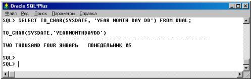

Создание хранимых процедур и функций
Подпрограмма - это именованный блок PL/SQL, который принимает параметры и может быть вызван. PL/SQL имеет два типа подпрограмм, называемых ПРОЦЕДУРАМИ и ФУНКЦИЯМИ.
Обычно процедуру вызывают для того, чтобы выполнить некоторое действие, а функцию - для того, чтобы вычислить некоторое значение. Как и неименованные (АНОНИМНЫЕ) блоки PL/SQL, подпрограммы имеют декларативную часть, исполняемую часть и необязательную часть обработки исключений.
Декларативная часть содержит объявления типов, курсоров, констант, переменных, исключений и вложенных подпрограмм. Все эти объекты локальны, и перестают существовать после выхода из подпрограммы.
Исполняемая часть содержит предложения, которые присваивают значения, управляют выполнением и манипулируют данными ORACLE.
Часть обработки исключений содержит обработчики, которые имеют дело с исключениями, возбуждаемыми при исполнении.
Подпрограммы можно определять в любом инструменте ORACLE, который поддерживает PL/SQL. Их можно объявлять в блоках PL/SQL, процедурах, функциях и пакетах. Однако подпрограммы должны объявляться в конце декларативной секции, после всех других программных объектов. Например, следующее объявление процедуры не на месте:
DECLARE
PROCEDURE ysenka (...) IS -- не на месте
Goods_id1 NUMBER;
...
BEGIN
...
END;
Обычно инструменты ORACLE, такие как SQL* Plus , которые инкорпорируют в себя процессор PL/SQL, способны сохранять подпрограммы для последующего, строго локального, исполнения. Однако для того, чтобы быть общедоступными для всех инструментов ORACLE, такие подпрограммы должны быть сохранены в базе данных.
Преимущества подпрограмм
Хранимые подпрограммы предоставляют расширяемость, модульность, способствуют абстракции, предоставляют более высокую продуктивность разработки, лучшую производительность, экономию памяти, целостность приложений и более строгую защиту.
Расширяемость. Подпрограммы они позволяют вам приспосабливать средства PL/SQL для ваших потребностей. Например, если вам нужна процедура, которая добавляла бы новые склады, вы легко можете написать ее:
CREATE PROCEDURE insert_ware (new_address VARCHAR2, new_volume NUMBER, new_storage_have VARCHAR2) AS
BEGIN
INSERT INTO warehouses VALUES (ware_seq.NEXTVAL, new_address, new_volume, new_volume, new_storage_have);
END insert_ware;
Модульность. Подпрограммы позволяют вам разбивать ваши программы на управляемые, хорошо определенные логические модули. Это поддерживает методы проектирования сверху вниз и пошагового уточнения, характерные для структурного подхода к решению проблем, Помимо этого, подпрограммы способствуют используемости и сопровождаемости. Однажды проверенную подпрограмму можно с уверенностью использовать в любом количестве приложений. Более того, лишь одна подпрограмма затрагивается, если изменяется ее определение. Это упрощает сопровождение и развитие.
Абстракции. Подпрограммы способствуют умственному отделению от частностей. Чтобы использовать подпрограммы, вам нужно знать, что они делают, а не как они это делают. Поэтому вы можете проектировать приложения сверху вниз, не заботясь о деталях реализации. С помощью фиктивных подпрограмм (затычек) вы можете отложить определение процедур и функций до тех пор, пока не протестируете и не отладите главную программу.
Повышение продуктивности. Проектируя приложения вокруг библиотеки хранимых подпрограмм, вы можете избежать неоднократного кодирования повторяющихся операций, повышая продуктивность разработки. Предположим, например, что несколько различных приложений вызывают хранимую процедуру, которая управляет таблицей goods в базе данных. Если метод управления изменится, потребуется пересмотреть лишь одну процедуру, а не все приложения.
Улучшение производительности. Использование подпрограмм может сократить число обращений ваших приложений к ORACLE. Например, для исполнения десяти индивидуальных предложений SQL требуется десять обращений к ORACLE, но для исполнения подпрограммы, содержащей десять предложений SQL, необходим лишь один вызов. Уменьшение число обращений может резко увеличить производительность, особенно если ваше приложение взаимодействует с ORACLE через сеть.
Хранимые процедуры могут улучшить производительность базы данных. Использование процедур существенно сокращает объем информации, пересылаемой по сети, по сравнению с выдачей индивидуальных предложений SQL или пересылкой в ORACLE текста целого блока PL/SQL. Более того, так как откомпилированная форма процедуры хранится в базе данных готовой к выполнению, для исполнения ее кода не требуется шага компиляции. Кроме того, если процедура уже присутствует в разделяемом пуле в SGA, то не требуется ее извлечения с диска, и выполнение может начаться немедленно.
Экономия памяти. Хранимые подпрограммы используют преимущества разделяемой памяти ORACLE. Так, лишь одна копия подпрограммы должна быть загружена в память, чтобы быть доступной всем пользователям. Использование одного и того же кода совместно многими пользователями приводит к существенной экономии памяти, требуемой приложениям.
Целостность приложений. Хранимые подпрограммы улучшают целостность и согласованность ваших приложений. Создавая приложения вокруг библиотеки хранимых подпрограмм, вы снижаете вероятность ошибок кодирования. Например, процедуру или функцию требуется протестировать лишь однократно, чтобы гарантировать, что она возвращает точный результат. После проверки, процедура может использоваться в любом числе приложений, поставляя им гарантированно достоверные результаты. При любом изменении структур данных, к которым обращается процедура, перекомпилировать потребуется лишь эту процедуру; приложения, вызывающие эту процедуру, не потребуют никаких модификаций (даже перекомпиляции).
Повышенная безопасность. Хранимые подпрограммы повышают безопасность данных. Ваш АБД может ограничить доступ пользователей к определенным операциям с базой данных, предоставляя доступ лишь через подпрограммы. Например, АБД может предоставить пользователям право выполнения хранимой процедуры, обновляющей таблицу goods , но не давать доступа к самой таблице goods . Когда пользователь вызывает процедуру, эта процедура выполняется с привилегиями владельца процедуры. Так как пользователи имеют лишь привилегию выполнять процедуру, но не имеют привилегий опрашивать, обновлять или удалять данные из соответствующих таблиц, возможности пользователей по манипулированию данными ограничиваются тем, что заложено в процедуру.
Процедуры
Процедура - это подпрограмма, которая выполняет специфическое действие.
Вы пишете процедуры, используя синтаксис:
PROCEDURE имя [ (параметр [, параметр, ...]) ] IS
[локальные объявления]
BEGIN
исполняемые предложения
[EXCEPTION
обработчики исключений]
END [имя];
где каждый "параметр" имеет следующий синтаксис:
имя_перем [IN | OUT | IN OUT] тип_данных [{:= | DEFAULT} знач]
Здесь моды IN | OUT | IN OUT, определяющие тип параметра, являются необязательными. Как необязательным является определение значений по умолчанию, которые могут быть заданы двумя способами:
:=значение либо DEFAULT значение.
В отличие от спецификатора типа данных в объявлении переменной, спецификатор типа данных для параметра не может иметь ограничений (см. тему 11).
Например, следующее объявление name1 незаконно (должно быть просто VARCHAR 2):
PROCEDURE ... (name1 VARCHAR2(20)) IS -- незаконно ;
BEGIN
...
END;
Процедура имеет две части: спецификацию и тело. Спецификация процедуры начинается с ключевого слова PROCEDURE и заканчивается именем процедуры или списком параметров. Объявления параметров необязательны. Если процедура не принимает параметров, скобки также не кодируются.
Тело процедуры начинается с ключевого слова IS и заканчивается ключевым словом END, за которым может следовать имя процедуры. Тело процедуры состоит из трех частей: декларативной части, исполняемой части и необязательной части обработки исключений.
Декларативная часть содержит локальные объявления, которые помещаются между ключевыми словами IS и BEGIN. Ключевое слово DECLARE, которое начинает декларативную часть в анонимном блоке PL/SQL, здесь не используется.
Исполняемая часть содержит предложения, которые помещаются между ключевыми словами BEGIN и EXCEPTION (или END). В исполняемой части процедуры должно быть хотя бы одно предложение.
Часть обработки исключений содержит обработчики исключений, которые помещаются между ключевыми словами EXCEPTION и END.
Рассмотрим процедуру buy _ goods , которая проводит в БД операцию покупки товара:
CREATE OR REPLACE PROCEDURE buy_goods (good_id1 NUMBER, quantity1 NUMBER) IS
Storage _ id 1 NUMBER (4); -- переменная для номера партии
ware _ id 1 NUMBER (4); -- переменная для номера склада
vol NUMBER (6,2); -- переменная для объема единицы товара
BEGIN
SELECT storage_id, ware_id INTO storage_id1, ware_id1 FROM storages WHERE
begin_time IN (SELECT MIN(begin_time) FROM storages
WHERE Goods_id=Good_id1 AND quantity>quantity1);
-- определяем объем единицы покупаемого товара
SELECT volume INTO vol FROM goods WHERE goods_id=good_id1;
-- фиксируем покупку части партии товара
UPDATE storages SET quantity = quantity - quantity1 WHERE storage_id = storage_id1;
--фиксируем освобождение соответствующего объема на складе
UPDATE warehouses SET volume_rest = volume_rest + quantity1* vol WHERE ware_id=ware_id1;
EXCEPTION
WHEN NO_DATA_FOUND THEN
INSERT INTO opt_audit VALUES (OPT_CUR.NEXTVAL, good_id1, 'No such goods');
END buy _ goods ;
При своем вызове эта процедура принимает номер товара и количество товара, которое хотят купить. Она использует номер, чтобы выбрать информацию о партии этого товара, завезенной раньше всего из таблицы базы данных storages . Если информации о партии искомого товара нет, возбуждается исключение. В противном случае количество товара на складе уменьшается.
Процедура вызывается как предложение PL/SQL. Например, процедура buy _ goods может быть вызвана так:
buy_goods (goods_need, count_goods);
Функции
Функция - это подпрограмма, которая вычисляет значение. Функции структурируются так же, как и процедуры, с той разницей, что функции содержат фразу RETURN. Вы пишете функции, используя синтаксис
FUNCTION имя [ (аргумент [, аргумент, ...]) ] RETURN тип_данн IS
[локальные объявления]
BEGIN
исполняемые предложения
[EXCEPTION
обработчики исключений]
END [имя];
где каждый "аргумент" имеет следующий синтаксис:
имя_перем [IN | OUT | IN OUT] тип_данных [{:= | DEFAULT} знач]
Здесь моды IN | OUT | IN OUT, определяющие тип параметра, являются необязательными. Как необязательным является определение значений по умолчанию, которые могут быть заданы двумя способами:
:=значение либо DEFAULT значение.
В отличие от спецификатора типа данных в объявлении переменной, спецификатор типа данных для параметра не может иметь ограничений. Как и процедура, функция имеет две части: спецификацию и тело. Спецификация функции начинается с ключевого слова FUNCTION и заканчивается фразой RETURN, которая специфицирует тип результирующего значения. Объявления аргументов необязательны. Если функция не принимает аргументов, скобки также не кодируются. Тело функции начинается с ключевого слова IS и заканчивается ключевым словом END, за которым может следовать имя функции. Тело функции состоит из трех частей: декларативной части, исполняемой части и необязательной части обработки исключений.
Декларативная часть содержит локальные объявления, которые помещаются между ключевыми словами IS и BEGIN. Ключевое слово DECLARE, которое начинает декларативную часть в анонимном блоке PL/SQL, здесь не используется.
Исполняемая часть содержит предложения, которые помещаются между ключевыми словами BEGIN и EXCEPTION (или END). В исполняемой части процедуры должно встретиться хотя бы одно предложение RETURN.
Часть обработки исключений содержит обработчики исключений, которые помещаются между ключевыми словами EXCEPTION и END (будет рассмотрено позже).
Рассмотрим процедуру quantity _ok, которая определяет, есть ли товар с заданным номером на складе в нужном объеме:
FUNCTION quantity_ok (goods_id1 NUMBER, quantity1 NUMBER) RETURN BOOLEAN IS
Sum_quantity NUMBER(6);
BEGIN
SELECT SUM(quantity) INTO Sum_quantity FROM storages WHERE goods_id = goods_id1;
RETURN (Sum_quantity >= quantity1);
END quantity_ok;
При своем вызове эта функция принимает номер товара и требуемое количество товара. Она использует номер товара, чтобы посчитать суммарное количество товара на складах из таблицы базы данных storages . Если суммарное количество превышает требуемое, функция возвращает TRUE, в противном случае - FALSE .
Функции вызываются как часть выражения.
Например, функция quantity _ ok может быть вызвана так:
IF quantity_ok (new_goods_id, need_quantity) THEN
...
END IF ;
...
done := quantity_ok (new_goods_id, need_quantity);
Идентификатор функции является выражением, которое заменяется своим значением.
Предложение RETURN
Предложение RETURN немедленно завершает выполнение подпрограммы и возвращает управление вызывающей программе. Выполнение продолжается с предложения, следующего за вызовом подпрограммы. Подпрограмма может содержать несколько предложений RETURN, ни одно из которых не обязано быть последним лексическим предложением в подпрограмме. Выполнение любого из них немедленно завершает подпрограмму. Однако наличие в подпрограмме нескольких точек выхода не является хорошей практикой программирования. В процедурах предложение RETURN не может содержать выражение. Это предложение просто возвращает управление вызывающей программе до достижения нормального конца процедуры. Однако в функциях предложение RETURN должно содержать выражение, которое вычисляется при выполнении предложения RETURN. Результирующее значение присваивается идентификатору функции.
Поэтому функция должна содержать хотя бы одно предложение RETURN. В противном случае PL/SQL возбуждает предопределенное исключение PROGRAM_ERROR во время выполнения.
Не путайте предложение RETURN с фразой RETURN, которая специфицирует тип данных результирующего значения в спецификации функции.
Вызов подпрограмм
Итак, встроенные функции PL / SQL являются собственными функциями этого языка и они хранятся на сервере ORACLE. Если у вас есть Процедурное расширение базы данных, то вы можете компилировать собственные (пользовательские) подпрограммы отдельно и сохранять их в базе данных ORACLE, где они готовы к выполнению.
Вы можете вызывать хранимые встроенные и пользовательские подпрограммы из триггера базы данных, другой хранимой подпрограммы, приложения прекомпилятора ORACLE, приложения OCI или из инструмента ORACLE, такого как SQL*Plus.
Хранимая подпрограмма может вызывать другую хранимую подпрограмму. Например, в анонимном блоке в вызове процедуры может появиться вызов встроенной функции
BEGIN
…
insert_ware (CONCAT(country, Kharkov'), 2000);
…
END;
Вы можете вызывать хранимые подпрограммы интерактивно из инструментов ORACLE, таких как SQL*Plus, SQL*Forms или SQL*DBA. Например, из SQL*Plus вы могли бы вызвать независимую процедуру insert _ ware следующим образом:
SQL> EXECUTE insert_ware (CONCAT(country, Kharkov'), 2000);
или
SQL> EXEC insert_ware (CONCAT(country, Kharkov'), 2000);
Вызов функций из SQL*Plus происходит следующим образом:
SQL> SELECT fac(5) FROM SYS.DUAL;
или
SQL> SELECT fac(5) FROM DUAL;
Поскольку функция должна вернуть значение, SQL*Plus использует с этой целью системную таблицу DUAL , расположенную в схеме системного администратора SYS .
Рассмотрим пример вызова в SQL*Plus встроенной функции преобразования типов данных TO _ CHAR (рис. 7):
SQL> SELECT TO_CHAR(SYSDATE, YEAR MONTH DAY DD') FROM DUAL;

Рисунок 7 - Пример вызова встроенной функции
Функция первый параметр получает с помощью другой встроенной функции SYSDATE , а затем полученное значение приводит к формату YEAR MONTH DAY DD '. Таким образом, показанные вызов функции позволяет вернуть текущую дату в формате: год прописью, название месяца, название дня недели и число.
Перед выполнением хранимой подпрограммы ORACLE устанавливает неявную точку сохранения. Если подпрограмма сбивается в результате необработанного исключения, ORACLE осуществляет откат к этой точке сохранения. Тем самым отменяется вся работа, проделанная подпрограммой.
Тело независимой или пакетированной хранимой подпрограммы может содержать любое предложение SQL или PL/SQL. Однако подпрограммы, участвующие в распределенной транзакции, триггерах базы данных и приложениях SQL*Forms, не могут вызывать хранимых подпрограмм, содержащих предложения COMMIT, ROLLBACK или SAVEPOINT. Обращения к хранимым функциям могут появляться в процедурных предложениях, но НЕ в предложениях SQL.